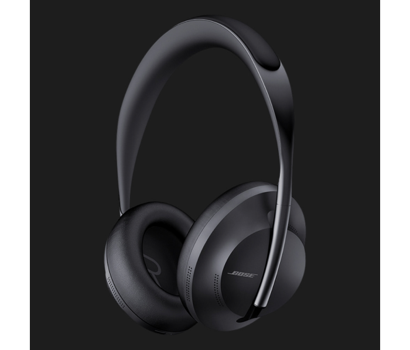

Наушники с шумоподавлением, которые способны на многое
До 20 часов воспроизведения
Наушники Bose NC 700
Премиальный дизайн и комфорт
-
11 уровней шумоподавления
С новыми наушниками Bose Noise Cancelling Headphone 700 можно плавно увеличить или уменьшить уровень шумоподавления. Вас слышно отлично и вы слышите собеседника четко, даже в шумной обстановке!
-
Комфорт на максимум
Стильная, легкая дужка из нержавеющей стали с мягкими, расположенными под углом чашками наушников для комфортной посадки. Внутренняя сторона выполнена из мягкой гелевой подкладки, которая хорошо прилегает к голове.